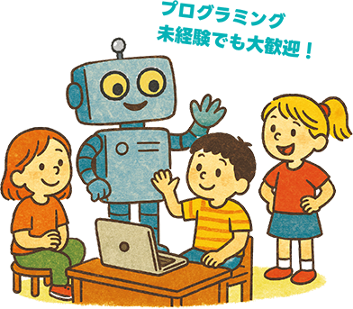
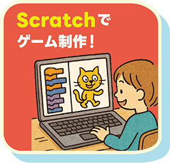
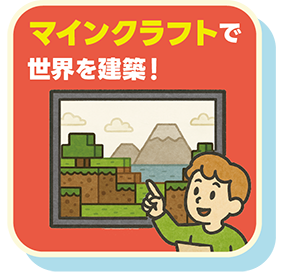
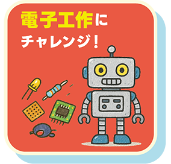

CoderDojoは「勉強する教室」ではなく、プログラミングを自由に楽しむための場所です！
自分が作りたいことにチャレンジしたり、作った作品でみんなと遊んだり、何をするかは君しだい！
困った事があっても、ボランティアのスタッフや仲間たちが協力してくれるので大丈夫！好きなことに夢中になろう！
東京都立川市近郊で、子どものプログラミングや Minecraft、ものづくりの居場所を探しているご家庭にも参加しやすいコミュニティです。
東京都立川市の CoderDojo 立川は、立川市・国立市・日野市・昭島市など多摩エリアの子どもたちと子育て世代に向けた無料のプログラミングコミュニティです。Scratch やスクラッチ、Minecraft やマイクラ、マインクラフトをきっかけにした学び、ゲームづくり、デジタルものづくりなど、それぞれの「つくりたい」を応援しています。
CoderDojoは「勉強する教室」ではなく、プログラミングを自由に楽しむための場所です！
自分が作りたいことにチャレンジしたり、作った作品でみんなと遊んだり、何をするかは君しだい！
困った事があっても、ボランティアのスタッフや仲間たちが協力してくれるので大丈夫！好きなことに夢中になろう！
東京都立川市近郊で、子どものプログラミングや Minecraft、ものづくりの居場所を探しているご家庭にも参加しやすいコミュニティです。




その他にも、みんながやりたいことは
なんでも応援するよ♪
Scratch や Web 制作、Minecraft を入り口にしたプログラミング、デジタル工作など、子どもたちの興味から始まるものづくりを大切にしています。
CoderDojo 立川では、立川市近郊の子どもたちが好きなテーマからプログラミングに入れるように、Scratch、スクラッチ、マイクラ、マインクラフト、Minecraft などの身近な関心を大切にしています。
Scratch（スクラッチ）でのゲーム作り、アニメーション、作品発表など、初めてのプログラミングにも取り組みやすいテーマを歓迎しています。
マイクラやマインクラフト、Minecraft をきっかけにしたアイデアの相談や、作品づくり、発表テーマの持ち込みも歓迎しています。
Web 制作、デジタル工作、自由研究の延長のようなものづくりまで、子どもたちの「作ってみたい」を CoderDojo 立川が後押しします。
Doorkeeperからの事前申し込み
CoderDojo 立川の最新開催情報は Doorkeeper で案内しています。立川市周辺で Scratch、スクラッチ、マイクラ、マインクラフトに興味がある子ども向けイベントを探している方は、まずはこちらをご確認ください。
CoderDojo 立川は、プログラミングに興味がある子どもたちに学び合いの場を提供するボランティア グループです。
立川市近郊で子どもの学びや居場所づくりに関心のある保護者、エンジニア、ものづくりが好きな地域の大人の参加も歓迎しています。
作品作りで困ったときには、メンターが「答えを教えない」をモットーに、子どもたちが自分の力で解決できるようサポートします。
一緒に地域のプログラミングコミュニティを盛り上げていきませんか？
まずは「見学」としてイベントにご参加いただき、私たちの活動に興味を持ってくださった方は、メンターとしてご登録ください。
活動への参加は強制ではありませんので、可能な範囲でお気軽にご参加ください。
イベントへの参加はDoorkeeperより、お申し込みください。